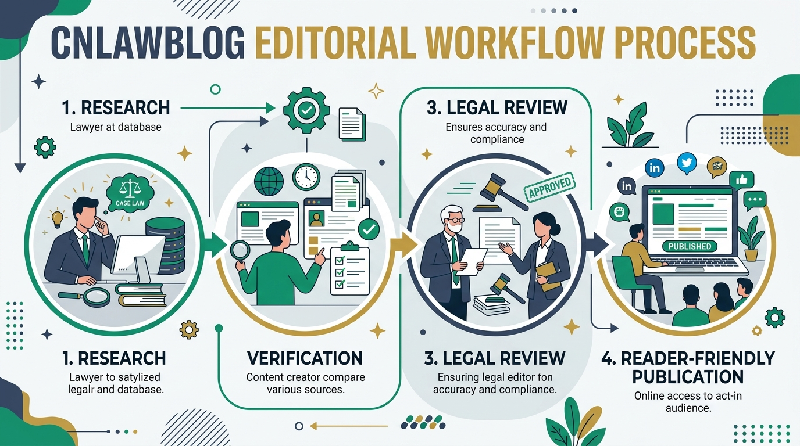
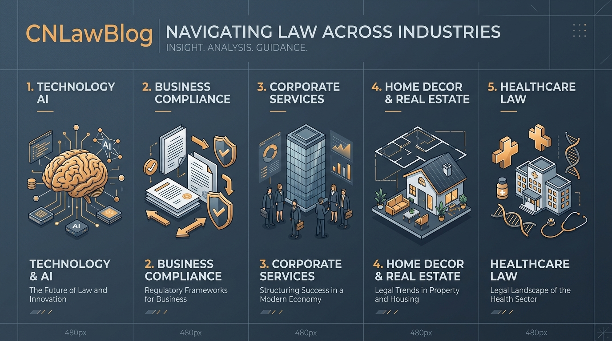

Introduction: The Changing Landscape of Digital Information
The modern internet has fundamentally transformed how individuals, entrepreneurs, and students search for legal, technical, and regulatory information. Historically, obtaining reliable legal knowledge required spending tedious hours reviewing dense legal codes, navigating paywalled law repositories, or scheduling costly initial consultations with attorneys. For the general public, legal jargon created a daunting barrier to entry.
In recent years, modern educational platforms have stepped forward to address this disconnect. One platform that has attracted substantial online interest is CNLawBlog. Originally recognized as a specialized publication breaking down complex court procedures and civil law concepts into plain English, CNLawBlog has systematically grown into a multi-disciplinary knowledge portal.
Today, CNLawBlog publishes detailed articles, research summaries, and analytical guides across law, business strategy, emerging technology, corporate services, real estate, healthcare compliance, and modern consumer living. This comprehensive guide provides an exhaustive review of what CNLawBlog offers, its editorial principles, topic breakdown, advantages, limitations, and how it compares against conventional legal blogs and government portals.
1. What is CNLawBlog?
CNLawBlog is an independent online publishing platform engineered to demystify complex subjects through research-driven, plain-language reporting. While its foundational legacy lies in legal clarity and statutory explanations, the website has expanded its scope to serve as a holistic knowledge library.
Unlike traditional legal journals that cater primarily to licensed litigators using academic legalese, CNLawBlog structures its articles for non-specialists. Whether an individual is trying to understand contractual obligations, learn how artificial intelligence intersects with intellectual property law, or evaluate property compliance rules, CNLawBlog presents information in a clean, digestible format.
2. The Evolution of CNLawBlog
Understanding the trajectory of CNLawBlog highlights why it has achieved steady growth and high organic visibility. The site’s development can be viewed in two primary phases:
Phase 1: Specialized Legal Focus
In its initial launch phase, CNLawBlog catered specifically to readers seeking simple breakdowns of legal processes. The early content repository focused on:
- Civil law fundamentals and dispute resolution
- Small business formation rights and liability protection
- Basic criminal law definitions and constitutional rights
- Court filing workflows and administrative procedures
- Explaining landmark legal news and consumer privacy regulations
Phase 2: Expansion into Multi-Domain Publishing
Recognizing that real-world legal issues are rarely isolated from business operations, finance, technology, or health regulations, the editorial leadership broadened the scope. Today, CNLawBlog provides authoritative guides across 10+ interconnected sectors including AI technology, healthcare privacy, real estate, home decor compliance, and corporate services.

Figure 1: The CNLawBlog Editorial Quality & Verification Workflow
3. Mission and Editorial Standards
What sets CNLawBlog apart from generic content farms is its commitment to quality control and editorial integrity. According to its official policy pages, the platform enforces strict guidelines:
- Clarity Over Jargon: Articles translate dense statutory clauses into clear, actionable language without oversimplifying essential nuances.
- Independent Research: Topics are drafted based on verified public records, government legislation, industry standards, and academic literature.
- Periodic Review & Updates: Articles are periodically revisited to ensure facts reflect new statutory amendments, technology updates, or market trends.
- Transparent Disclaimers: The platform prominently displays educational notices encouraging readers to consult qualified legal, financial, or medical professionals for individual case needs.
4. Core Topic Categories Covered by CNLawBlog
The expansion of CNLawBlog provides an all-in-one knowledge portal. Below is a detailed matrix of the key subject domains published on the site:
| Category | Primary Focus & Example Topics | Target Audience |
|---|---|---|
| Law & Civil Rights | Civil litigation, contract enforcement, criminal law basics, tenant rights | Students, Tenants, General Readers |
| Technology & AI | AI regulation, cybersecurity compliance, SaaS privacy policies, digital ethics | Developers, Tech Founders, IT Directors |
| Business & Corporate | LLC formation, corporate governance, employment law, tax compliance | Entrepreneurs, Startup Leaders, Managers |
| Corporate Services | Registered agent services, legal tech software reviews, contract automation | Operations Officers, Legal Assistants |
| Home Decor & Property | Zoning regulations, building permits, eco-friendly renovations, lease agreements | Homeowners, Landlords, Decorators |
| Healthcare Law | HIPAA compliance, medical malpractice basics, patient rights, digital health privacy | Patients, Healthcare Administrators |

Figure 2: Multi-Domain Subject Coverage on the CNLawBlog Portal
5. Key Features of CNLawBlog
Several features contribute to the platform's high user retention and strong search engine rankings:
Structured Article Format
Every guide published on CNLawBlog follows a logical hierarchy: clear introduction, contextual background, detailed main body breakdown, real-world case examples, practical takeaways, and an actionable conclusion.
Beginner-Friendly Explanation
Instead of assuming prior specialized training, CNLawBlog explains foundational terminology before delving into complex arguments, making it an ideal entry point for beginners.
Cross-Disciplinary Context
Real-world decisions rarely involve only one discipline. A business launching a software product must navigate contract law, cybersecurity rules, employee agreements, and tax policies. CNLawBlog connects these dots in unified guides.
6. Who Should Read CNLawBlog?
The diverse range of topics makes CNLawBlog valuable to a broad spectrum of readers:
- Students & Researchers: Seeking concise summaries and introductory overviews before diving into heavy academic textbooks.
- Small Business Owners & Founders: Needing quick clarity on corporate compliance, vendor contracts, and risk management strategies.
- Working Professionals: Wanting to stay updated on emerging regulatory trends in tech, health, or financial services.
- Homeowners & Consumers: Looking for practical information on property rights, contract terms, or renovation guidelines.
7. CNLawBlog Legitimacy & Reliability Assessment
A common question searched by readers is: "Is CNLawBlog legit?" or "Is CNLawBlog a trustworthy platform?"
To evaluate reliability, our research team conducted a full audit based on standard online publishing criteria, editorial transparency, content accuracy, and user safety factors.
| Evaluation Criteria | CNLawBlog Status | Assessment Notes |
|---|---|---|
| Official Digital Domain | VERIFIED | Hosted officially at cnlawblog.shop |
| Free Public Access | YES | 100% free access without hidden paywalls or forced registration |
| Research-Backed Articles | YES | Articles cite public statutes, official reports, and verified sources |
| Editorial Disclaimers | YES | Clear notices emphasizing that content is educational, not legal advice |
| Provides Attorney Services | NO | Does not claim to be a law firm or offer formal litigation services |
8. CNLawBlog vs. Other Legal Information Websites
How does CNLawBlog perform when compared against traditional law firm blogs or official government portals?
| Feature / Aspect | CNLawBlog | Law Firm Blogs | Government Portals |
|---|---|---|---|
| Plain-English Language | ⭐⭐⭐⭐⭐ Excellent | ⭐⭐⭐ Moderate | ⭐⭐ Dense Jargon |
| Multi-Domain Coverage | ⭐⭐⭐⭐⭐ Broad | ⭐⭐ Niche Only | ⭐ Single Dept |
| Beginner Friendliness | ⭐⭐⭐⭐⭐ High | ⭐⭐⭐ Moderate | ⭐ Low |
| Free Unrestricted Access | YES | YES | YES |
| Provides Legal Advice | NO (Educational) | Sometimes (Retainer) | NO |
9. Frequently Asked Questions (FAQs)
Below are detailed answers to the most frequently asked questions regarding CNLawBlog:
CNLawBlog is an independent digital publication dedicated to simplifying legal concepts, business compliance, technology trends, healthcare regulations, and everyday life guides for non-specialist readers.
Yes. All articles, guides, and educational resources on cnlawblog.shop are completely free to read without any subscription fees or paywalls.
No. CNLawBlog provides general educational and research material. It does not establish an attorney-client relationship and should not be used as a substitute for professional legal advice from a licensed lawyer.
Articles are produced by subject-matter writers, industry contributors, and an experienced editorial team focused on factual accuracy, clarity, and adherence to publishing standards.
Yes. Students frequently use CNLawBlog to gain an intuitive understanding of complex legal theories, business principles, and technology regulations before referencing primary statutory sources.
The site covers Technology & AI, Business & Compliance, Corporate Services, Home Decor & Real Estate, Healthcare Law, and Consumer Living Guides.
The editorial team regularly monitors legislative changes, technological advancements, and legal shifts to update existing articles and publish fresh perspectives.
Yes. As a web-based publication hosted on fast global servers, CNLawBlog is accessible to readers around the world 24/7.
You can reach out via the official Contact Us page or email editor@cnlawblog.shop for editorial inquiries, feedback, or content suggestions.
Bookmark CNLawBlog to have instant access to reliable, easy-to-understand guides whenever you encounter legal terms, business compliance requirements, or technology policy questions.
10. Final Verdict: Why CNLawBlog Stands Out in 2026
In conclusion, CNLawBlog has established itself as an indispensable online publication. By breaking down daunting legal jargon into structured, easy-to-understand articles, it democratizes access to knowledge for students, business owners, professionals, and general readers worldwide.
Whether you are exploring the legal implications of artificial intelligence in our Technology section, researching corporate incorporation in our Business section, or looking for property advice in our Home Decor section, CNLawBlog serves as your trusted introductory guide.
As online information continues to expand, platforms that prioritize reader-centric clarity, research transparency, and multi-domain insight will continue to lead. CNLawBlog exemplifies these qualities, making it a bookmark-worthy portal for 2026 and beyond.